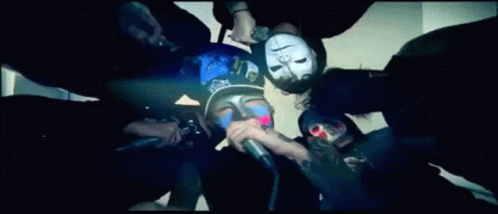
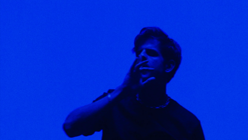

1. Hollywood Undead

Hollywood Undead is a dynamic and genre-blending American rock band known for its energetic fusion of rock, rap, and electronic elements. Formed in Los Angeles in 2005, the band gained popularity for its unique sound and theatrical stage presence. Characterized by catchy hooks, intense lyrics, and a diverse range of musical influences, Hollywood Undead often explores themes of rebellion, angst, and the complexities of modern life in their songs. The band's lineup consists of multiple vocalists, each contributing to the group's distinctive style. With a devoted fan base, Hollywood Undead has released albums that showcase their versatility and evolution within the rock and rap-rock genres, making them a noteworthy presence in the contemporary music scene.
2. Taco Hemingway

Filip Szcześniak. Born on July 23, 1990, in Łódź, Poland, Taco Hemingway has gained significant recognition in the Polish music scene for his unique style, intricate lyricism, and innovative approach to hip-hop. Taco's music often features thought-provoking lyrics that delve into various aspects of life, self-reflection, and social commentary. He is known for his versatility in blending different genres, creating a sound that goes beyond traditional hip-hop boundaries. His work incorporates elements of rap, jazz, electronic, and alternative music, showcasing a rich and diverse musical palette. Taco Hemingway's discography includes solo projects as well as collaborations with other artists. Some of his notable albums include "Marmur" and "Cafe Belga." He has built a dedicated fan base and has been praised for his ability to push artistic boundaries within the Polish hip-hop landscape.
3. Rogal DDL
Rogal DDL, the enigmatic force in the rap game, emerges from the shadows with a trueschool essence and a ferocious delivery that defines hard brutal rap. With lyrics that cut through the beats like a sharp blade, Rogal brings an unapologetic authenticity to his storytelling. His verses are a raw and unfiltered reflection of the gritty realities he's faced, intertwining tales of street wisdom with a relentless commitment to the art form. Known for his thunderous beats and a flow that hits like a heavyweight punch, Rogal DDL navigates the trueschool landscape with an old-school mentality, paying homage to the roots of hip-hop while injecting a modern intensity. His stage presence is magnetic, commanding attention as he spits fire on the mic, leaving audiences in awe of the lyrical onslaught. In the realm of hard brutal rap, Rogal DDL stands as a fearless trailblazer, unafraid to confront the harsh truths of life with every bar. His music resonates with those who seek unapologetic grit in the rap scene, establishing him as a formidable force in the underground where the beats are raw, the lyrics are ruthless, and the essence of trueschool hip-hop thrives.
4. 52 Dębiec

Pięć Dwa Dębiec, often stylized as 52 Dębiec, is a Polish hip-hop group formed by rappers Pelson (Tomasz Matkowski) and Włodi (Włodzimierz Zdeb). The name "Pięć Dwa" translates to "Fifty-Two" in English, and "Dębiec" refers to a district in the city of Poznań, Poland, where the duo originates. Pięć Dwa Dębiec gained prominence in the late 1990s and early 2000s as a part of the Polish hip-hop scene. They are recognized for their socially conscious lyrics, addressing various issues such as life struggles, social inequalities, and personal experiences. The duo's music often carries a raw and authentic vibe, resonating with audiences for its relatable content. One of Pięć Dwa Dębiec's most well-known tracks is "Kodex 2" from the album "Kodex 2: Proces" released in 2004. The duo's collaborative efforts have contributed to the development and popularity of Polish hip-hop, and they remain influential figures in the genre. For the latest information on Pięć Dwa Dębiec, including their discography, current activities, and any recent releases, it is recommended to check official social media profiles, music platforms, or reputable news sources for the most up-to-date details.
5. ABBA
ABBA is a Swedish pop group that achieved global fame and success in the 1970s and early 1980s. The band's name is an acronym derived from the first letters of the members' names: Agnetha Fältskog, Björn Ulvaeus, Benny Andersson, and Anni-Frid Lyngstad. ABBA is one of the best-selling music artists in history, with an estimated 150 to 385 million records sold worldwide. ABBA's music remains timeless, and their impact on pop music continues to be celebrated by fans worldwide.